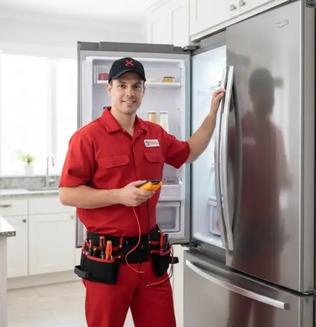

إصلاح الثلاجات الطارئ: ماذا تفعل عندما تتوقف ثلاجتك عن العمل؟
خطوات أولية آمنة، علامات الخلل التي تحتاج إلى فني، ومتى يجب التعامل مع توقف الثلاجة كحالة عاجلة.
توقف الثلاجة بشكل مفاجئ من المواقف التي تحتاج إلى تصرف هادئ وسريع، خصوصًا إذا كانت تحتوي على أطعمة قابلة للتلف. لكن قبل اعتبار المشكلة عطلًا كبيرًا، من المهم البدء بالخطوات البسيطة والآمنة للتأكد من مصدر المشكلة.
في هذا الدليل من أرشيف مدير الصيانة نستعرض ما يمكنك فحصه بنفسك، ومتى يصبح تدخل الفني ضروريًا، وبعض العلامات المرتبطة بالثيرموستات ودائرة التبريد ومروحة الثلاجة.
الثلاجة وقفت فجأة؟
ابدأ بفحص الكهرباء وإغلاق الباب وإعدادات الحرارة. وإذا استمرت المشكلة، يمكنك طلب صيانة منزلية أو الاستفسار عن إمكانية إحضار الجهاز إلى مقر مدير الصيانة.
اطلب فحص الثلاجةأسباب توقف الثلاجة عن العمل والحلول الأولية
عندما تتوقف الثلاجة، لا تبدأ بتغيير أي قطعة مباشرة. أول خطوة هي التأكد من مصدر الكهرباء؛ افحص القاطع والمقبس وسلك التغذية، وتأكد من عدم وجود مشكلة واضحة في مصدر الطاقة.
إذا كان المقبس يعمل بشكل طبيعي، انتقل إلى الملاحظات الأخرى مثل وجود أصوات غير معتادة، أو ارتفاع الحرارة، أو تراكم الثلج، أو توقف المروحة. تنظيف مناطق التهوية والمكثف من الأتربة قد يكون مفيدًا عندما يكون ذلك متاحًا وآمنًا وفق تعليمات الجهاز.
ماذا يمكنك فحصه بنفسك قبل طلب الفني؟
- فحص الباب والجوان: تأكد من أن الباب يغلق بإحكام وأن الإطار المطاطي ليس به تلف واضح.
- مراجعة إعدادات الحرارة: تأكد من عدم تغيير منظم الحرارة بالخطأ، وأن الإعداد مناسب لطبيعة الجهاز.
- فحص تراكم الثلج: إذا كان هناك تراكم كثيف وغير طبيعي، راجع تعليمات الموديل قبل تنفيذ عملية إذابة الثلج.
- فحص التهوية الخارجية: تأكد من عدم انسداد مناطق التهوية بالأتربة أو وضع الجهاز في مكان يمنع التخلص من الحرارة.
- مراجعة توزيع الأطعمة: لا تسد فتحات توزيع الهواء داخل الثلاجة، لأن ذلك قد يؤثر على وصول الهواء البارد إلى أجزاء الجهاز.
متى تحتاج إلى صيانة طارئة للثلاجة؟
تصبح الأولوية أعلى عندما يتوقف الجهاز بالكامل، أو ترتفع الحرارة بصورة واضحة، أو تظهر أصوات قوية ومستمرّة، أو توجد علامات تسريب أو مشكلة كهربائية. في هذه الحالات، لا يُنصح بتجارب عشوائية قد تزيد الضرر.
- توقف كامل للجهاز رغم التأكد من أن مصدر الكهرباء يعمل.
- ارتفاع واضح في حرارة الثلاجة والفريزر مع استمرار المشكلة.
- صوت طقطقة أو ضوضاء جديدة ومتكررة مصحوبة بضعف التبريد أو توقف التشغيل.
- علامات غير طبيعية حول الضاغط أو المواسير مثل آثار زيت أو تسريب.
- مشكلة كهربائية أو رائحة احتراق؛ في هذه الحالة افصل الجهاز عن الكهرباء إذا كان ذلك آمنًا واطلب فحصًا متخصصًا.
علامات قد تشير إلى مشكلة في ثيرموستات الثلاجة
الثيرموستات أو نظام التحكم في درجة الحرارة يساعد على تنظيم تشغيل دورة التبريد. وإذا أصبح الجهاز لا يستجيب لتغيير الإعدادات أو يعمل لفترات غير طبيعية، فقد يكون هناك خلل في نظام التحكم أو في مكونات أخرى مرتبطة بالتبريد.
التبريد المفرط
إذا استمرت الثلاجة في التبريد بصورة مبالغ فيها أو تجمدت الأطعمة رغم ضبط الإعداد بشكل معتدل، فهذه علامة تستحق الفحص.
عمل الضاغط لفترات طويلة
استمرار تشغيل الضاغط لفترات طويلة قد يرتبط بعدة أسباب، وليس بالضرورة الثيرموستات وحده؛ لذلك التشخيص مهم قبل استبدال القطعة.
تقلب درجات الحرارة
تذبذب واضح في التبريد من وقت لآخر قد يدل على مشكلة في التحكم بالحرارة أو أحد مكونات دورة التبريد.
عدم تأثير تغيير الإعدادات
إذا قمت بتغيير درجة الحرارة ولم تلاحظ أي اختلاف في طريقة التشغيل، فمن الأفضل إجراء فحص فني بدل تغيير منظم الحرارة بالتخمين.
هل ضعف التبريد يعني أن الثلاجة تحتاج إلى فريون؟
ليس بالضرورة. ضعف التبريد قد ينتج عن أسباب كثيرة مثل مشاكل تدفق الهواء، تراكم الثلج، المروحة، التحكم في الحرارة، أو مكونات أخرى. أما نقص غاز التبريد فلا يمكن تأكيده من العرض وحده.
وجود ضعف في التبريد مع تشغيل الضاغط لفترات طويلة، أو ظهور آثار زيت حول بعض أجزاء دائرة التبريد، قد يستدعي فحصًا متخصصًا للتأكد من وجود تسريب أو خلل في الدائرة.
مشكلة مروحة الثلاجة وتأثيرها على التبريد
في بعض ثلاجات نوفروست، تلعب مروحة المبخر دورًا أساسيًا في توزيع الهواء البارد. وعند وجود مشكلة بها قد تلاحظ اختلافًا في درجة التبريد بين أجزاء الجهاز.
- تجمد حول المروحة: تراكم الثلج قد يمنع دورانها في بعض الحالات.
- تلف موتور المروحة: قد يؤدي إلى توقف حركة الهواء وظهور ضعف في التبريد.
- مشكلة في حساس أو مفتاح الباب: بعض الموديلات تتحكم في تشغيل المروحة بحسب حالة الباب.
إذا استمر ضعف التبريد بعد الفحوصات البسيطة المسموح بها، فلا تحاول الوصول إلى المروحة أو الدوائر الداخلية دون معرفة فنية؛ الأفضل طلب التشخيص المناسب للموديل.
عطل الثلاجة مش لازم يكبر
مدير الصيانة يوفر خدمة صيانة للأجهزة المنزلية مع إمكانية الزيارة المنزلية، كما يمكنك الاستفسار عن استقبال الجهاز في مقر الشركة. وعند الحاجة إلى تغيير قطعة، يتم توفير القطع الأصلية المناسبة وفق توافرها للموديل.
ابدأ طلب الصيانةأسئلة شائعة
ماذا أفعل بالطعام الموجود داخل الثلاجة عند توقفها؟
حافظ على باب الثلاجة مغلقًا قدر الإمكان لتقليل فقد البرودة، وتعامل مع الأطعمة القابلة للتلف وفق إرشادات سلامة الغذاء ودرجة الحرارة الفعلية. إذا ارتفعت الحرارة أو طال وقت التوقف، لا تعتمد على الرائحة أو الشكل وحدهما للحكم على سلامة الطعام.
هل يمكن شحن فريون للثلاجة بمجرد ضعف التبريد؟
لا. يجب تحديد سبب ضعف التبريد أولًا. شحن دائرة التبريد دون تشخيص السبب قد لا يحل المشكلة وقد يؤدي إلى تشغيل غير صحيح للنظام.
هل زيادة كمية غاز التبريد مشكلة؟
نعم، التعامل غير الصحيح مع دائرة التبريد أو شحن كمية غير مناسبة قد يؤثر على أداء الجهاز ومكوناته. لذلك يجب أن يتم فحص وشحن الدائرة بواسطة فني متخصص.
لماذا تظهر رائحة غير جيدة داخل الثلاجة؟
قد ترتبط الرائحة ببقايا أطعمة، أو مياه راكدة، أو اتساخ بعض الأجزاء الداخلية، أو مشكلة في التصريف. إذا ظهرت الرائحة بعد إصلاح أو تنظيف واستمرت، فالأفضل فحص مصدرها بدل الاكتفاء بإخفائها بالمعطرات.
هل أستطيع إصلاح الثلاجة بنفسي؟
يمكنك إجراء الفحوصات الخارجية البسيطة والآمنة، لكن أعمال الكهرباء ودائرة التبريد والضاغط والمكونات الداخلية تحتاج إلى متخصص. الهدف من الفحص المنزلي هو تحديد الأعراض، وليس تفكيك الجهاز.
محتاج فني ثلاجات؟
أرسل نوع الجهاز والماركة والموديل ووصف العطل إن أمكن. يمكنك طلب زيارة منزلية أو الاستفسار عن إمكانية إحضار الجهاز إلى مقر مدير الصيانة.
احجز أو استفسر الآنهل تواجه مشكلة أو عطلاً في جهازك؟
تواصل مع فريق "مدير الصيانة" الآن للحصول على استشارة فنية وفحص منزلي فوري بأعلى معايير الدقة والأمان.